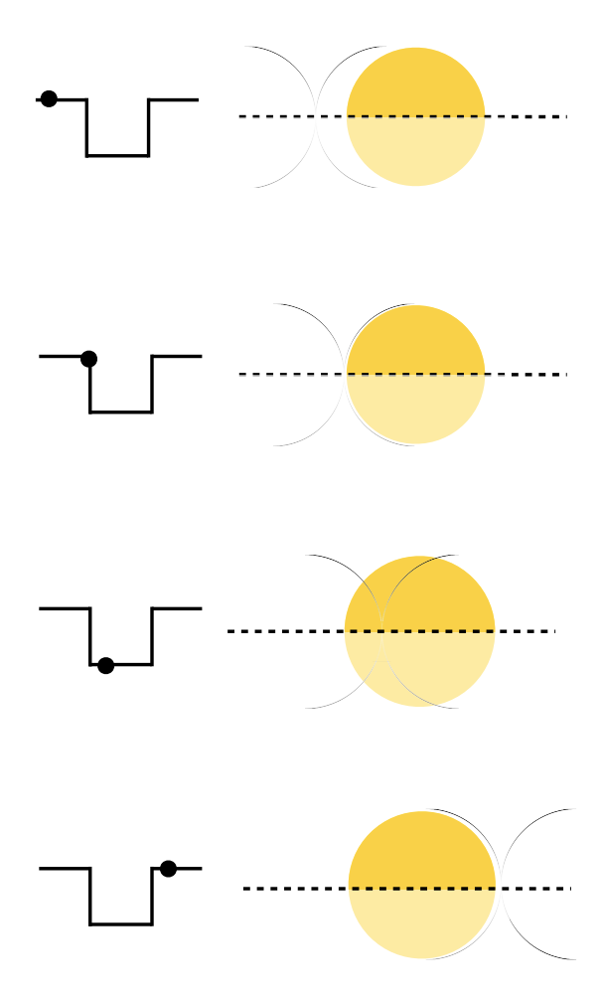
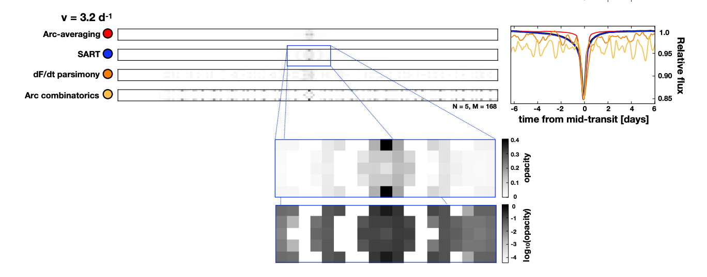

Shadow Imaging of Transiting Objects
Can we infer the shape of a transiting object from its light curve alone?
Not uniquely---there are several degeneracies inherent to the problem, which mean that infinitely many "shadow images" correspond to any given light curve.
At left, the "arc degeneracy," by which a pair of arcs of non-uniform opacity generate the same flat-bottomed light curve as an infinitesimal opaque point.
Nevertheless, if we adopt some additional assumptions about the image---for example, that it be as smooth as possible, or alternatively, that it is a solid body with no semi-opaque pieces---we can recover informative shadow images.
Below, our results for Dip 5 of Boyajian's Star.
EightBitTransit, a Python package which can generate a light curve from any image and recover an image from any light curve, is available here.
See our paper for further details.